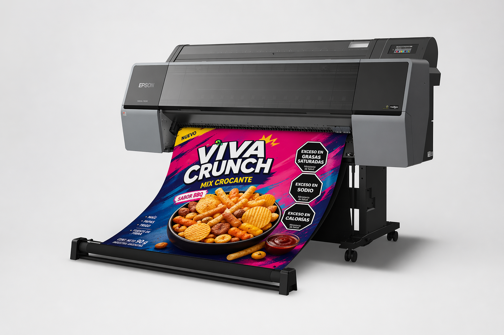
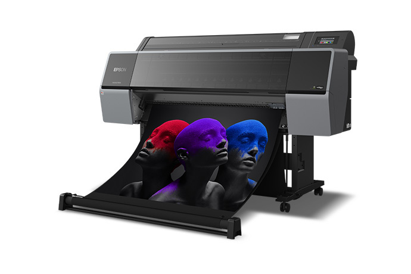
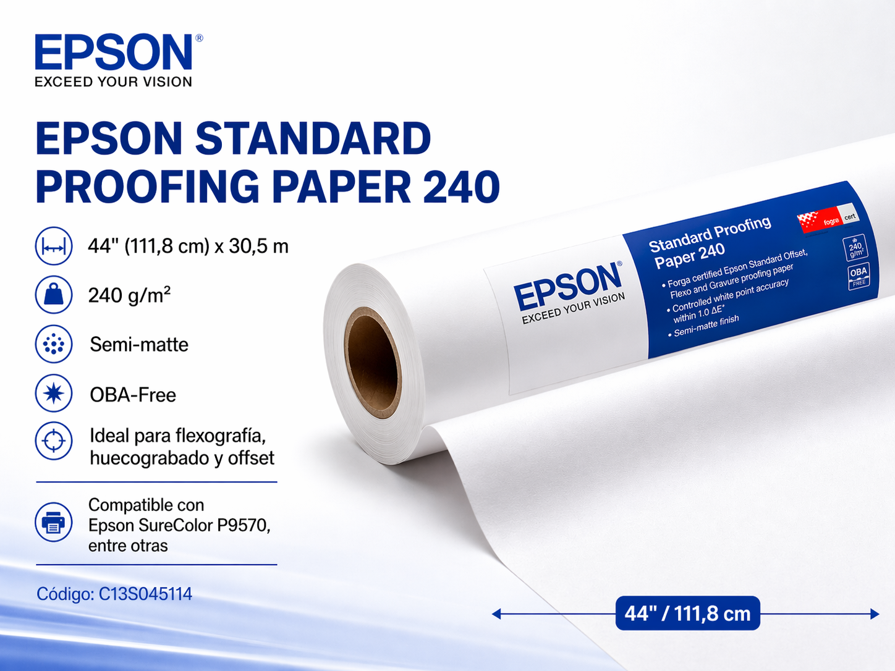

Cromalin : Prueba Color
44" / 111 cm
Formato máximo de impresión para cromalines, prueba color y trabajos de gran formato.
12 colores PRO12
Sistema UltraChrome PRO12 con amplia gama cromática y excelente estabilidad visual.
PrecisionCore 2,6"
Cabezal de impresión diseñado para alta precisión, estabilidad y rendimiento en prueba color.
Impresoras e insumos para impresión de cromalines
Insumos y equipos para la impresión de cromalines para flexografía. Flexo Vision presenta una propuesta orientada a prueba color, cromalines y trabajos de impresión donde el control visual, la estabilidad cromática y la presentación profesional son fundamentales.

Cromalines
Prueba color
Soluciones para cromalines con foco en flexografía.
Flexo Vision comercializa impresoras e insumos para la impresión de cromalines, orientados a pruebas de color con control visual, repetibilidad y estabilidad cromática para flexografía, huecograbado y offset.
Productos destacados
Epson SureColor P9570 y papel Epson
Equipos e insumos seleccionados para la impresión de cromalines, con tecnología Epson, estabilidad de color y soporte para pruebas de color de alta exigencia.

Producto destacado
Epson SureColor P9570
Equipo orientado a fotografía profesional, pruebas de color, diseño gráfico y producción de gran formato, con una reproducción cromática ampliada y alta precisión.
- Formato máximo de 44 pulgadas / 111 cm.
- Dimensiones del equipo: 1.909 x 667 x 1.218 mm.
- Cabezal PrecisionCore de 2,6 pulgadas.
- Hasta 2,4 veces más rápida que la generación previa.
- Incluye Photo Black y Matte Black en la misma configuración.
- Peso del equipo: 122 kg.

Producto destacado
Epson Standard Proofing Paper 240
Papel para prueba color en presentación de 44" (111,8 cm) x 30,5 m, con terminación semi-matte y formulación OBA-Free.
- Código: C13S045114.
- Gramaje: 240 g/m2.
- Ideal para flexografía, huecograbado y offset.
- Compatible con Epson SureColor P9570, entre otras.
Papel certificado con software GMG y ESKO, manteniendo el delta de color por
mucho tiempo una vez impresa la prueba de color (Cromalin).
También disponible en una versión más chica:
24" (61 cm) x 30,5 m.
Código: C13S045112.
Sistema de tinta
Sistema de 12 cartuchos UltraChrome PRO12
La SureColor P9570 utiliza tinta pigmentada Epson UltraChrome PRO12 en una configuración de 12 colores orientada a cromalines y prueba color.
Sistema de tinta y disposición de consumibles
La configuración incluye 12 colores: Cyan, Light Cyan, Vivid Magenta, Vivid Light Magenta, Yellow, Gray, Light Gray, Orange, Green, Photo Black, Matte Black y Violet.
- La disposición de cartuchos facilita la identificación visual rápida por color.
- Orange, Green y Violet amplían el espacio de color para alta fidelidad cromática.
- Photo Black y Matte Black mejoran la versatilidad según el medio de impresión.
- Las fotografías permiten visualizar ambos bancos de consumibles del equipo.
El sistema de tinta acompaña trabajos de prueba color, diseño gráfico y producción
donde la precisión cromática y la estabilidad en el tiempo son un requisito técnico.
Cyan
Light Cyan
Vivid Magenta
Vivid Light Magenta
Yellow
Gray
Light Gray
Orange
Green
Photo Black
Matte Black
Violet


Otros servicios
Otros servicios y aplicaciones
Soluciones aplicadas a distintas industrias que requieren prueba color, control visual y presentación impresa con estabilidad y precisión.
Aplicaciones orientadas a prueba color, cromalines y revisión visual para procesos gráficos de alta exigencia.
Presentación de trabajos donde el detalle tonal, la fidelidad cromática y la calidad visual son determinantes.
Soporte para ingeniería y arquitectura, con foco en lectura precisa, prolijidad y presentación técnica.
Soluciones para contenidos editoriales donde importan la legibilidad, la uniformidad y la presentación impresa.
Aplicaciones para piezas visuales que requieren impacto, formato y una buena presentación del color final.
Uso en muestras, presentación visual y desarrollo de trabajos donde la consistencia cromática es parte del proceso.